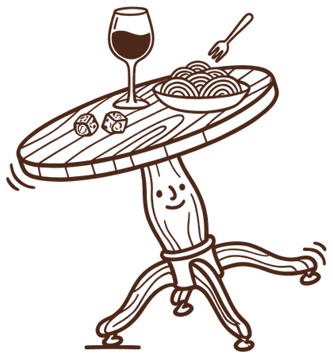

Contact Us
For a seat at the next dinner, a question about the wines, or a kitchen you think we should cook with:
- @TipsyTableHK
Wine dinnersHong Kong


For a seat at the next dinner, a question about the wines, or a kitchen you think we should cook with: